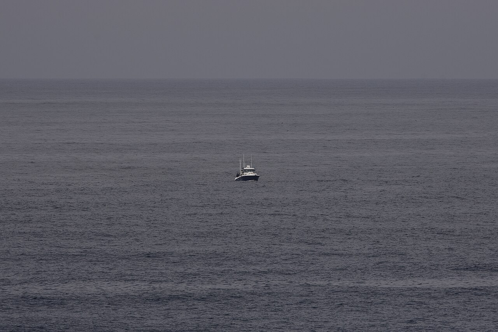

동기 유발
파도는 밀려오는데, 공은 왜 제자리일까?
교과서 p. 62학습 목표
- 해파의 발생 과정을 설명할 수 있다.
- 천해파와 심해파의 차이점을 비교·설명할 수 있다.

Russ, CC BY 2.0

Brocken Inaglory, CC BY-SA 3.0
바다에 빠진 공은 파도가 계속 밀려와도 해안으로 잘 오지 않는다. 왜 그럴까?
예시: 해파는 물이 직접 이동하는 것이 아니라 마루와 골의 위치가 번갈아 바뀌며 에너지만 전달하기 때문입니다. 파도·파랑도 해파의 일종임을 짚어 줍니다. 교과서 운영안은 3차시(해파의 특징·탐구 2차시 / 해파의 종류·심해파와 천해파·굴절 1차시)입니다.
핵심 개념 1
해파의 특징과 발생
교과서 p. 62 ~ 63(1) 해파의 모양
- 해파: 해수면의 교란이 파동으로 퍼지면서 나타나는 물 입자의 주기적인 상하 운동
- 마루: 해수면이 가장 높은 곳 / 골: 가장 낮은 곳 / 파고: 골에서 마루까지의 높이
- 파장: 마루에서 마루(또는 골에서 골)까지의 거리 / 주기: 한 지점을 마루가 지나간 뒤 다음 마루가 지나갈 때까지의 시간
해파의 진행 속도 = 파장주기 파장이 길수록, 주기가 짧을수록 빠르다
자체 제작 모식도
(2) 해파가 전파될 때 물 입자는?
- 해파가 지나가면 해수면 위의 갈매기는 위로 올라갔다가 회전하며 내려와 처음 위치로 돌아온다.
- 물 입자는 주기적으로 원운동 또는 타원 운동을 하면서 에너지만 전달하고, 해파의 진행 방향으로 직접 이동하지 않는다.
- 마루와 골의 위치가 번갈아 바뀌기 때문에 해수가 이동하는 것처럼 보일 뿐이다.
핵심 개념 2
풍랑 · 너울 · 연안 쇄파와 심해파 · 천해파
교과서 p. 64 ~ 65(1) 모양에 따른 해파의 종류
풍랑바람이 부는 해역에서 마루가 뾰족
→
너울바람 해역을 벗어나 마루가 둥글고 파장이 길고 고름
→
연안 쇄파해안에서 느려지고 파고가 높아져 부서짐
- 풍랑은 바람이 셀수록, 오래 불수록, 바람이 부는 해역이 넓을수록 크게 발달한다.
- 너울이 해안에 가까워져 수심이 얕아지면 속도가 느려지고 파장이 짧아지며 파고가 높아져, 결국 모양을 유지하지 못하고 부서진다(연안 쇄파).
(2) 심해파 · 천이파 · 천해파
| 심해파 | 천이파(전이파) | 천해파 | |
|---|---|---|---|
| 조건 (h: 수심, L: 파장) | h > L/2 | L/20 < h < L/2 | h < L/20 |
| 해저의 영향 | 받지 않음 | 중간 | 받음 |
| 물 입자의 운동 | 원운동 (깊을수록 작아져 L/2 깊이에서는 거의 없음) | 타원 운동 | 타원 운동 (깊을수록 납작, 해저에서는 수평 왕복) |
| 속도를 결정하는 것 | 파장 (길수록 빠름) | 파장과 수심 | 수심 (얕을수록 느림) |
심해파 속도 = √gL2π 천해파 속도 = √gh g: 중력 가속도, L: 파장, h: 수심
- 심해파는 해안에 다가가며 천이파 → 천해파로 바뀐다. 천해파는 수심이 얕아질수록 느려지므로 해안에 가까울수록 파장이 짧아지고 파고가 높아진다.
시뮬레이션 1수심에 따른 물 입자의 운동
파장은 40 m로 고정했다. 수심을 줄여 심해파 → 천이파 → 천해파로 바뀌는 모습을 보자. 노란 점(갈매기)이 어떻게 움직이는지, 깊이에 따라 궤도 모양이 어떻게 달라지는지 비교하자.
시뮬레이션 2해안으로 다가오는 해파의 변형
오른쪽으로 갈수록 바다가 얕아진다. 해파의 파장과 파고가 어떻게 바뀌고 어디에서 부서지는지 관찰하자. 파고는 보기 쉽게 과장했다.
(3) 해파의 굴절
- 해파가 해안에 비스듬히 다가오거나 곶·만처럼 수심 변화가 큰 곳에서는, 속도 차이 때문에 해파가 굴절한다.
- 곶: 앞바다의 수심이 얕아 파가 먼저 느려지므로 해파가 곶 쪽으로 굴절해 에너지가 집중 → 침식 활발 → 해식 절벽 등
- 만: 해파 에너지가 분산 → 퇴적 활발 → 모래사장
시뮬레이션 3곶과 만에서 휘어지는 파봉
위(먼 바다)에서 곧게 출발한 파봉이 해안에 가까워지며 어떻게 휘는지 보자. 왼쪽 튀어나온 부분이 곶, 오른쪽 들어간 부분이 만이다.
탐구 활동
해파 발생 및 전파 실험하기
교과서 p. 63탐구 · 수조에서 해파 만들기
목표 바람이 불 때 해파가 발생하는 원리와 전파 과정을 설명할 수 있다.
준비물 사각 수조, 물, 자 2개, 손선풍기, 스타이로폼 조각
- 사각 수조에 물을 채우고 수평·수직으로 자를 설치한 뒤, 스타이로폼 조각을 여러 개 띄운다.
- 손선풍기로 수조 한쪽 구석에 바람을 일으키고 스타이로폼 조각의 움직임을 관찰한다.
- 바람의 세기를 바꾸며 수면의 높이 변화를 관찰한다.
안전: 손선풍기가 물에 닿지 않도록 주의한다.
결과 및 정리
1. 해파가 진행할 때 스타이로폼 조각은 어떻게 움직이는가? 2. 바람의 세기에 따라 수면의 높이는? 3. 해파의 발생 원리와 전파 과정은?
1. 스타이로폼 조각은 위로 올라갔다가 회전하며 내려와 처음 위치로 돌아온다.
2. 바람이 셀수록 수면이 점점 높아지다가, 어느 높이에 이르면 더 이상 높아지지 않는다.
3. 해파는 주로 바람으로 생긴다. 해파가 진행하는 동안 물 입자는 원·타원 운동을 하며 에너지만 전달하고, 진행 방향으로 직접 이동하지 않는다. 마루와 골의 위치가 바뀌어 해수가 이동하는 것처럼 보일 뿐이다.
2. 바람이 셀수록 수면이 점점 높아지다가, 어느 높이에 이르면 더 이상 높아지지 않는다.
3. 해파는 주로 바람으로 생긴다. 해파가 진행하는 동안 물 입자는 원·타원 운동을 하며 에너지만 전달하고, 진행 방향으로 직접 이동하지 않는다. 마루와 골의 위치가 바뀌어 해수가 이동하는 것처럼 보일 뿐이다.
스스로 확인하기
1. 해파의 발생과 전파 과정을 설명해 보자.
대부분의 해파는 바람이 불어 발달하고, 풍랑 → 너울 → 연안 쇄파로 모양이 바뀌면서 해안 쪽으로 전파된다.
2. 심해파, 천이파, 천해파를 구분하는 기준은?
파장과 수심의 비로 구분한다. 수심이 파장의 1/2보다 깊으면 심해파, 1/20보다 얕으면 천해파, 그 사이는 천이파이다.
3. 창의력 더하기 · 대부분의 파도가 해안선에 나란하게 밀려오는 까닭은?
해안 가까이의 파도는 대부분 천해파이며, 천해파의 속도는 수심의 제곱근에 비례한다. 파도가 비스듬히 다가오면 깊은 쪽은 빠르고 얕은 쪽은 느려서 해안 쪽으로 굴절하므로, 결국 해안선과 나란하게 밀려온다.
형성 평가
개념 확인 문제
그림 출처
사진은 Wikimedia Commons의 CC 라이선스 자료이며 그림 아래에 저작자와 라이선스를 표시했습니다. 모식도와 시뮬레이션은 직접 만들었습니다.